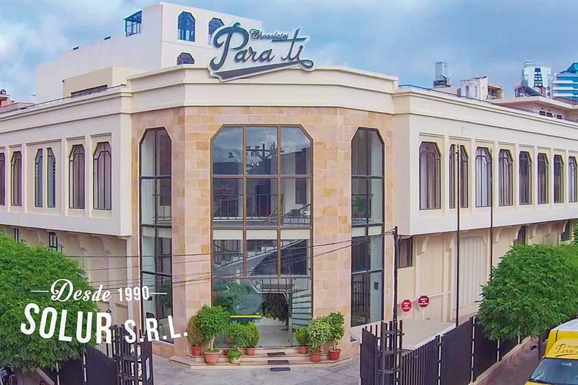
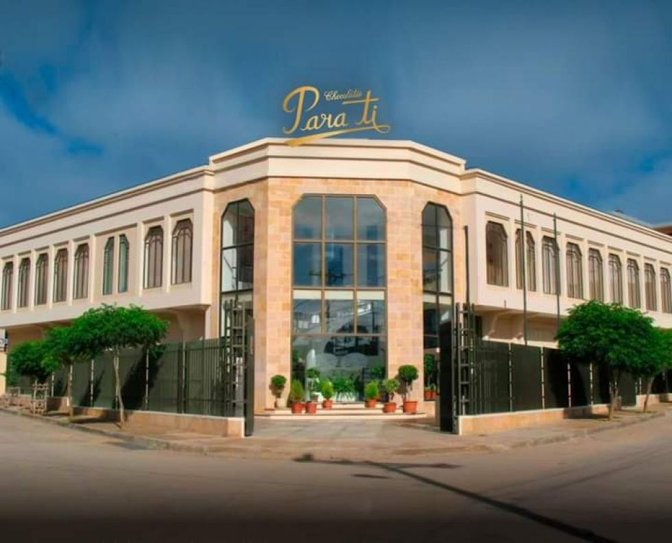
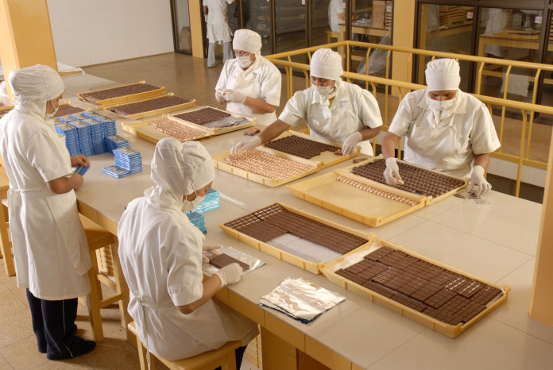

HISTORIA DE LA FABRICA DE CHOCOLATES "PARA TI"
Solur S.R.L, empresa creada con objeto de elaborar chocolates “Para Ti”, inició la venta de sus productos el 27 de mayo de 1990, en el día consagrado a la madre boliviana. Empezó su proceso productivo con siete personas y tres máquinas. Ahora tiene una planta mecanizada y un personal de 190 personas, es la más grande de Sucre y una de las más grandes del país.
Utiliza materia prima nacional y, especialmente, el cacao silvestre, entre ellos el procedente de Guanay, en un territorio natural que está a orillas del parque Madidi. La Asociación de Productores de Cacao del Pueblo de Larecaja, que agrupa a 35 familias de esa comunidad indígena, vende el 90% de su producción a “Para Ti”, del mismo grano que ha obtenido una importante distinción al haber sido seleccionado entre los 18 mejores del mundo y los 4 mejores de Sudamérica.
Los productos son presentados en diferentes tipos de envase, algunos importados y la mayor parte fabricados por artesanos e indígenas, utilizando materiales naturales típicos de cada región. En las tabletas, por ejemplo, desde la iniciación de las actividades de la planta, la envoltura tiene la característica de mostrar hermosas fotografías de nuestra ciudad que llevan el mensaje implícito de promocionar el turismo haciendo conocer nuestra hermosa arquitectura colonial y neoclásica.
- 
- 

- 
RESPONSABILIDAD SOCIAL
Cada uno de nuestros chocolates es una obra de arte, elaborada con la pasión y dedicación de nuestros maestros chocolateros. Desde la selección de los mejores granos de cacao hasta el delicado proceso de templado, cada etapa es realizada con cuidado y esmero. Invertimos en tecnología de punta y en prácticas agrícolas sostenibles para garantizar la calidad y la trazabilidad de nuestros ingredientes. Creemos que un chocolate excepcional nace de la combinación perfecta entre tradición y innovación, y es por eso que nos esforzamos por ofrecer a nuestros clientes una experiencia única y memorable.
MISION
Nuestra misión es crear experiencias sensoriales únicas a través de chocolates excepcionales, elaborados con los mejores ingredientes naturales. Queremos conectar a las personas con la naturaleza, celebrando la diversidad de sabores y aromas que el cacao nos ofrece, y promoviendo un consumo consciente y respetuoso con el medio ambiente
VISION
Ser reconocidos a nivel mundial como la marca líder en chocolates premium de Bolivia, sinónimo de excelencia, innovación y sostenibilidad. Queremos ser la elección preferida de los consumidores más exigentes, aquellos que buscan experiencias únicas y productos de la más alta calidad.